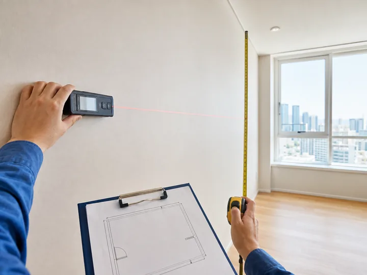
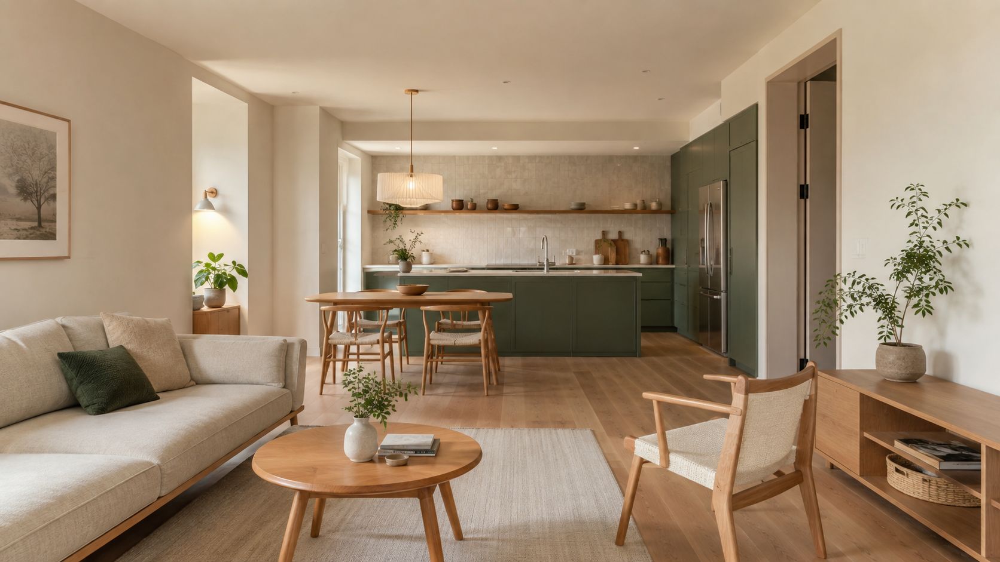
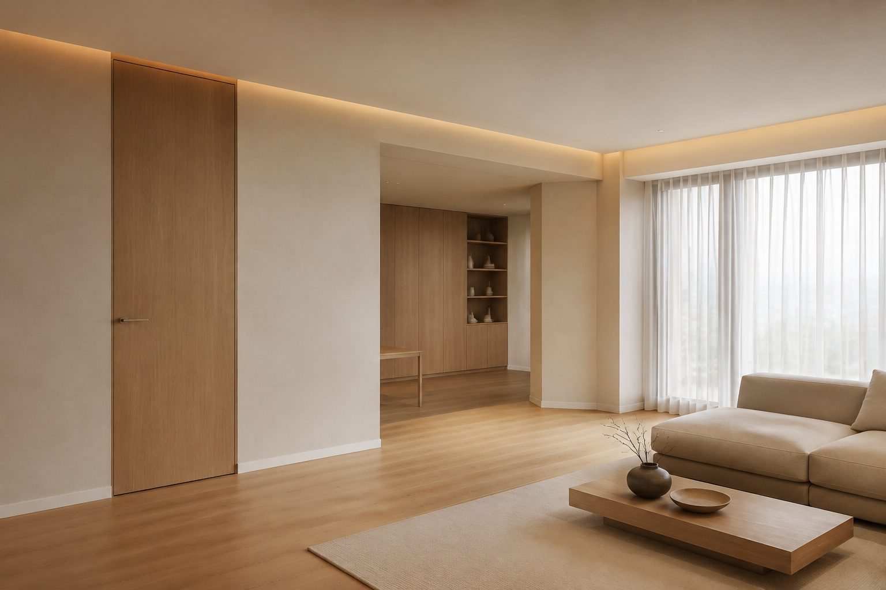
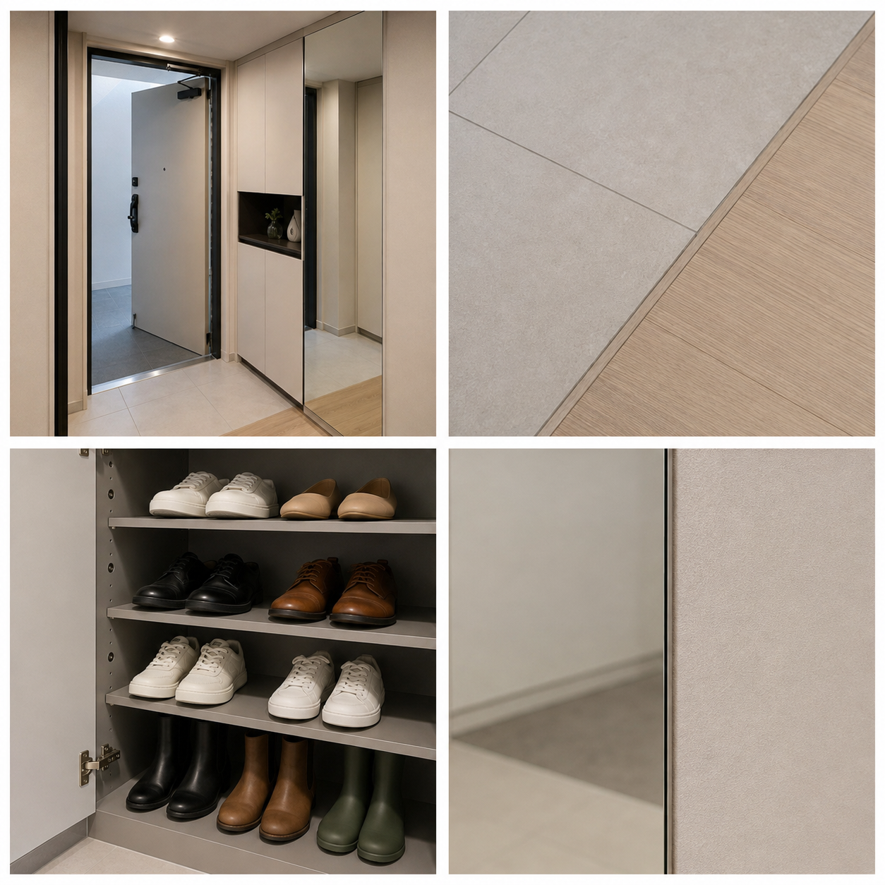

STEP 01현재 공간을 촬영합니다
전체가 보이는 정면·좌측·우측 사진을 찍고, 간단한 가로·세로·높이 사이즈를 입력해주세요.
직접 고치고 싶은 사람을 위한
사진과 간단한 실측을 보내주세요. 지금 불편한 이유를 찾고, 어떤 디자인이 맞는지부터 어디까지 직접 하고 얼마가 필요한지까지 한 흐름으로 정리합니다.

먼저 준비해주세요
아래 다섯 가지만 남겨주시면, 사진을 분석해 진단 결과와 다음 단계를 안내해드립니다.

전체가 보이는 정면·좌측·우측 사진을 찍고, 간단한 가로·세로·높이 사이즈를 입력해주세요.
마음에 드는 공간, 컬러, 벽지 등의 사진을 함께 올려주세요.
사전 디자인을 먼저 받고, 결제 후 컨셉 디자인과 시공 방식별 상세 견적을 비교합니다.
판단이 이어지는 6단계
앞 단계에서 확인한 조건이 다음 선택과 견적의 기준이 됩니다.
공간, 치수, 생활 방식과 예산을 기록합니다.
구조·설비·바탕 상태와 확인 항목을 나눕니다.
보기 좋은 시안보다 실제 사용 장면을 먼저 봅니다.
가격, 관리, 내구성, 보수와 대체품을 비교합니다.
셀프·부분 외주·전문가 작업을 나눕니다.
발주량, 순서, 숨은 비용과 검수까지 정리합니다.
콘텐츠 분석에서 정리한 핵심
가족, 물건, 식사, 재택근무와 청소 습관이 디자인보다 먼저입니다.
필름·벽지·도장은 습기, 오염, 균열과 접착 상태가 결과를 좌우합니다.
사고·하자·복구 비용이 크면 전문가에게 맡기는 것이 합리적입니다.
수량, 규격, 인건비, 폐기물, 추가 조건과 A/S를 함께 비교합니다.
셀프 인테리어 선택 가이드
좋은 점뿐 아니라 실제 사용, 보수와 하자 위험, 추천하지 않는 조건을 함께 비교합니다.
좋은 점줄눈이 적고 넓고 단정해 보입니다.
주의할 점무겁고 시공 난도가 높으며 욕실은 미끄럼과 배수 경사를 함께 봐야 합니다.
선택 기준논슬립 성능, 청소 습관과 부분 교체 가능성을 확인합니다.
좋은 점경계선이 줄어 공간이 정돈돼 보입니다.
주의할 점구축은 벽·천장 면 정리와 균열 보수 부담이 큽니다.
선택 기준면 상태와 예산에 따라 얇은 평몰딩도 비교합니다.
좋은 점욕실이 단정하고 일체감 있게 보입니다.
주의할 점방수·배수와 매립 부품에 민감하고 수리 범위가 커질 수 있습니다.
선택 기준점검구, 국내 교체 부품과 시공 책임 범위를 먼저 봅니다.
좋은 점작은 주방이 가볍고 넓어 보입니다.
주의할 점수납이 줄고 기름과 먼지를 자주 닦아야 합니다.
선택 기준식기 수와 요리 빈도에 따라 닫힌 수납을 섞습니다.
철거 전에 꼭 알아두세요
해체, 분류, 보양, 반출과 적법한 폐기까지 한 작업입니다.
셀프 가능이라고만 말하지 않습니다
현장과 경험에 따라 난도가 달라집니다. 실패했을 때 복구 범위까지 보고 직접 할지 결정합니다.
전기·가스·구조·방수는 전문가 확인을 기본으로 합니다.
공정별 셀프 시공 가이드
실제 제안서에는 고객 공간의 사진, 면적, 제품, 수량과 구매처까지 연결합니다.
들뜸, 기름, 수분과 MDF 팽창을 확인합니다.
필름, 프라이머, 헤라, 칼, 자, 드라이어, 사포, 퍼티, 장갑
탈지 → 보수·샌딩 → 청소 → 프라이머 건조 → 재단 → 부착
넓은 문짝, 깊은 몰딩과 반복되는 습기는 부분 외주를 검토합니다.
기포, 주름, 모서리 들뜸과 문·서랍 간섭을 확인합니다.
누수·결로·곰팡이 원인과 바탕 강도를 확인합니다.
벽지, 풀, 롤러, 재단자, 칼, 솔, 이음 롤러, 보양재, 사다리
기존 마감 제거 → 보수 → 초배 판단 → 재단 → 풀 도포 → 부착
높은 천장, 실크벽지 전체와 심한 바탕 불량은 외주를 권합니다.
이음, 풀 오염, 기포, 들뜸과 건조 중 환기를 확인합니다.
기존 도막, 박리, 곰팡이, 수분과 오염을 확인합니다.
도료, 프라이머, 퍼티, 사포, 롤러·붓, 보양재, 보호구
보양 → 세척 → 박리 제거 → 보수·샌딩 → 프라이머 → 도장
원인 불명 습기, 유해 도막 의심과 고소 작업은 전문가 확인이 필요합니다.
얼룩, 흐름, 핀홀, 붓 자국과 접착 상태를 확인합니다.
손잡이·선반 교체, 가구 조립 등 되돌리기 쉬운 작업
실리콘, 줄눈, 장판·걸레받이 등 정밀 마감 작업
대면적 타일, 상판, 무거운 가구, 철거·폐기물 반출
전기, 가스, 구조, 방수, 매립 배관과 원인 불명의 누수
작동, 수평·수직, 접착, 누수, 간섭과 손상을 기록합니다.
MATERIAL GUIDE
제품의 특징, 시공 조건과 관리 기준을 전문적으로 정리했습니다. 상세 가이드는 새 탭에서 열립니다.
STYLE LIBRARY · NORDIC
비우기만 한 미니멀 공간이 아니라, 가족의 생활을 중심으로 색과 기능을 정확히 남기는 디자인을 살펴봅니다.

SCANDINAVIAN HOME · ORIGINAL CONCEPT포인트 컬러를 현관과 주방에 반복하고, 상부장을 덜어낸 주방과 편안한 작업 동선으로 감성과 생활을 함께 잡은 자체 디자인입니다.

WARM MINIMAL · WOOD & HIDDEN화이트와 오크의 편안한 조합에 정돈된 천장선, 슬림 문선과 간접조명을 더합니다. CASE 01의 컬러 포인트와 달리 재료의 질감과 여백이 중심입니다.
AI 생성 디자인 제안 · 실제 시공사진 아님
샌드 베이지와 짙은 월넛, 부드러운 곡선과 은은한 빛. 콰이어트 럭셔리를 우리 집에 맞는 공사 범위로 제안합니다.
AI 생성 디자인 제안 · 실제 시공사진 아님
SPACE PICK
예쁜 사진을 모으는 데서 끝내지 않고, 실제 평면과 현장에 적용할 수 있는 이유와 조건을 함께 정리합니다.
 CASE 01
CASE 01구축 2Bay 구조의 채광과 수납, 거실·주방 연결 문제를 현실적인 설계 기준으로 살펴봅니다.

CASE 0237개 상세 설명과 16컷의 이미지. 현장 확인 방법·업체 요청사항·주의점까지 읽고 체크와 메모로 남깁니다.
타일·도기·수전·젠다이·줄눈부터 환풍기와 조명까지 가성비와 관리 기준을 함께 비교합니다.
공간별 적용 예시

기존 타일의 들뜸과 방수 상태가 양호하다면 전면 철거 대신 욕실용 도장으로 분위기를 바꿉니다. 다만 물이 직접 닿는 바닥·샤워부는 방수와 미끄럼 조건을 먼저 확인합니다.

문짝과 몸통 상태가 양호하면 철거를 줄이고 인테리어필름, 손잡이, 실리콘과 상판 일부를 보수합니다. 습기로 부푼 MDF와 뒤틀린 도어는 교체 범위를 따로 구분합니다.

큰 구조 변경 없이 벽 마감과 몰딩 비례를 정리하고, 필요한 면에 포인트 컬러와 간접조명을 더합니다. 기존 천장과 전기 배선 상태에 따라 셀프와 전문가 작업을 구분합니다.

침실은 과한 공사보다 차분한 벽지, 간결한 몰딩과 눈부심이 적은 사각등 교체를 우선합니다. 천장 보수와 전기 결선은 현장 상태를 확인한 뒤 작업 범위를 정합니다.
공간한쪽 제안서
처음부터 과한 공사를 권하지 않습니다. 현재 상태를 살리고 싶은 부분과 반드시 손봐야 할 부분을 구분한 뒤, 디자인과 비용을 함께 비교합니다.
사진과 실측으로 유지·보수·철거 후보와 추가 확인 항목을 구분합니다.
계약 전 먼저 확인현실형, 무몰딩, 클래식과 고강도 컨셉을 전체·정면·좌우 뷰로 비교합니다.
디자인 강도 · 셀프 난이도 표시벽지·도장·필름·몰딩·조명의 장단점과 현장 적용 조건을 비교합니다.
실제품 · 시공법 · 관리 기준동일한 디자인을 기준으로 자재비, 부분 외주와 업체 시공 비용을 나눕니다.
셀프 · 반셀프 · 업체 시공준비물, 작업 순서, 실패 위험, 전문가 전환 시점과 완료 검수를 정리합니다.
계약 후 상세 제공